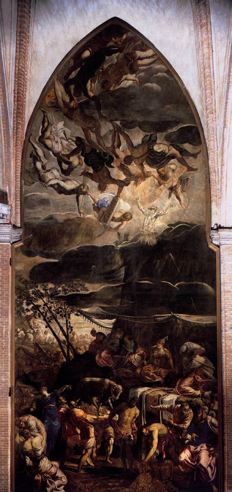
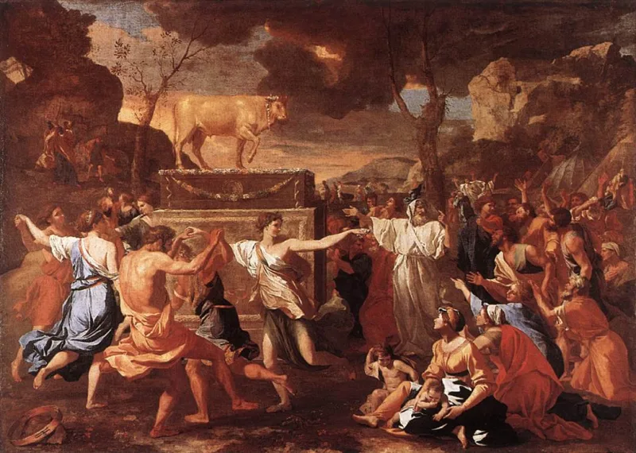

Muslim scholars have a real answer here. Say so before your friend does.
Quran 20:85-97 says the golden calf at Sinai was made by al-Samiri. The word means the Samaritan.
Exodus 32 says Aaron made it. So two things differ.
Who made the calf, and what he is called.
The Samaritans came from the region of Samaria. That region was named long after the Exodus.
Its people were resettled after the Assyrian conquest in 722 BC. That is about seven centuries too late.
Scholars think the story reflects later feeling against Samaritans, who were linked with calf-worship at Bethel and Dan.
Islamic Awareness gives a serious reply. Al-Samiri names one man.
It need not be an ethnic word at all. It could come from a clan or a place.
1 Kings 16:24 shows Shemer as a man's name, older than the city. Samaritans also claim older roots than critics allow.
And the Quran, they say, clears a prophet of making an idol.
Genuinely arguable. Neither side can prove the name.
But the escape works against the plainest Arabic reading, where the word is the ethnic one. The critic's reading is the more likely one.
Exodus 32 names Aaron. The Quran moves the blame.
That difference stands whatever the name means. Nobody has answered it.
"Exodus 32 names Aaron. Have you ever read that chapter for yourself?"


They say al-Samiri names one man, and need not be an ethnic word.
Islamic Awareness argues that al-Samiri is a by-name for one man. It need not mean the Samaritan at all. It could come from a clan or a place name. 1 Kings 16:24 shows Shemer as a personal name, older than the city of Samaria.
There is a second route as well. Samaritan tradition itself claims roots before the exile, so the name may point to something older than critics allow. And the Quran corrects the biblical account rather than copying it, by clearing a prophet, Aaron, of making an idol.
Arguable on the name, but the shift of blame from Aaron still stands.
The escape by word-origin is possible. Al-Samiri need not be the name of a people. And Shemer as a name is attested early.
But it pleads a special case against the plainest Arabic reading. There the word is the ethnic one, just as classical usage renders it. The story also fits known later themes of attack on Samaritans.
Neither side can strictly prove who is meant. The critic's reading is the more likely one. And clearing Aaron, against Exodus 32, is a second gap. It stands unanswered.